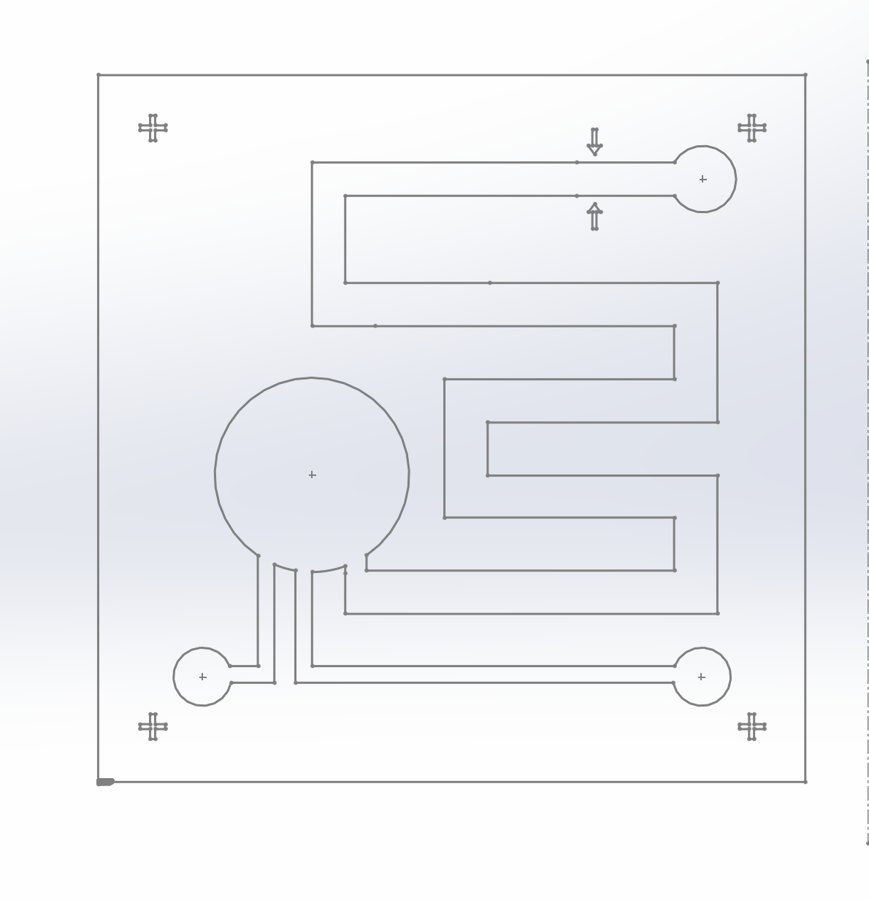
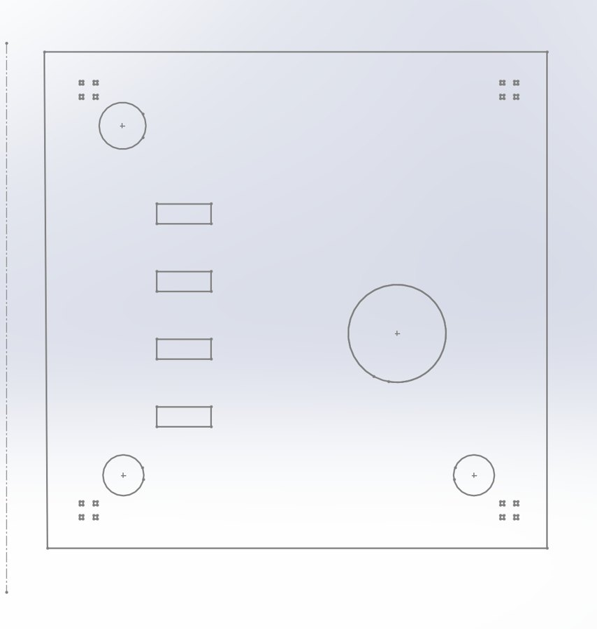
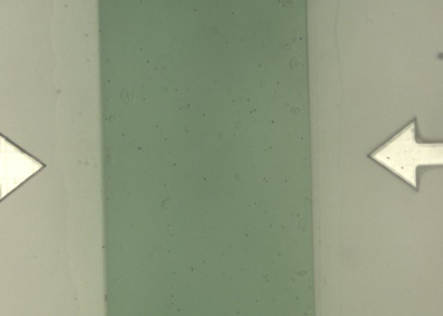
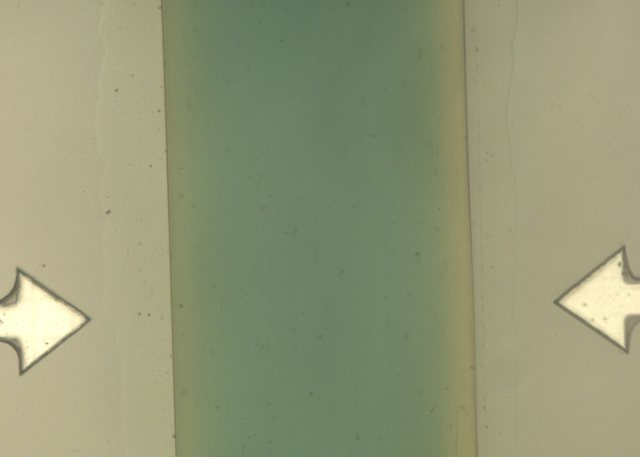
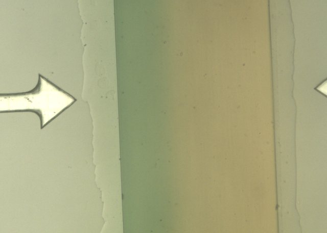
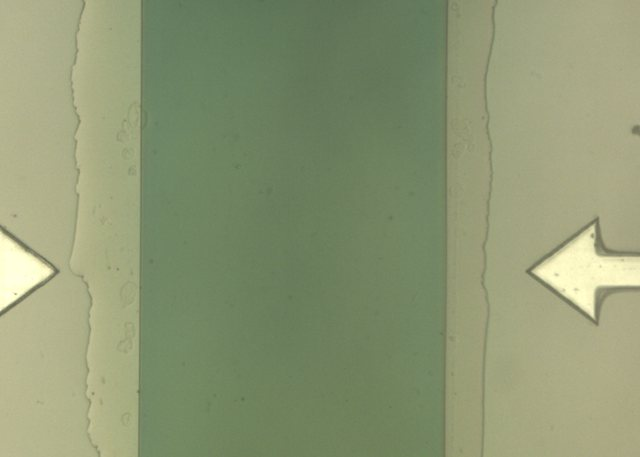
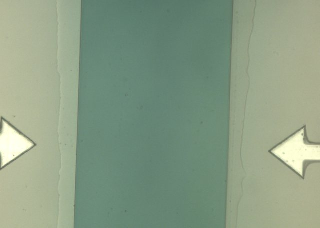

The design idea
I had read about mixers where the fluid loops around itself, so I tried a stronger version: send each stream around a curve and crash them head-on in an impingement region, stretching and folding the interface between them. In case that idea underperformed, I added an obstacle-lined serpentine after it as a backup. The bottom mold carries the channels; the top mold carries the inlets, outlet and alignment features.


How the mold was made
The channels are cast in PDMS from a silicon master. Step through the master fabrication below (cross-section X-X′, not to scale).
Why mixing is hard here
For a 200 × 150 µm channel of water, the Reynolds number based on hydraulic diameter stays far below the turbulent threshold at every flow rate I tested. Mixing has to come from diffusion across the interface, which the bends and the impingement try to speed up by stretching it.
| Flow rate | Mean velocity | Re (hydraulic dia.) | Regime |
|---|---|---|---|
| 5 µL/min | 2.8 mm/s | 0.53 | Laminar |
| 50 µL/min | 27.8 mm/s | 5.3 | Laminar |
| 500 µL/min | 0.28 m/s | 53 | Laminar |
| 1 mL/min | 0.56 m/s | 107 | Laminar |
What the outlet looked like
Microscope images of the outlet channel at each flow rate. I measured a line profile across the channel in ImageJ and used its spread as a mixing metric: a flat profile means the dyes are evenly mixed.






The peak at 0.25 mL/min fits the physics: slow enough for diffusion to act during the residence time, fast enough for the impingement to fold the interface.
What I would change
- Bonding. The two PDMS halves leaked at the seam; at 1 mL/min I had to hold them together. A plasma-activated bond would fix the seal and make higher flow rates testable.
- Symmetry. The blue stream had a longer path to the mixing region than the other, so the streams arrived unbalanced. Equal inlet path lengths would let the slingshot work as designed.
- Measurement. Calibrate pixel intensity against known dye concentrations, average over a region instead of one pixel row, and profile several cross-sections along the channel to see where mixing actually happens.